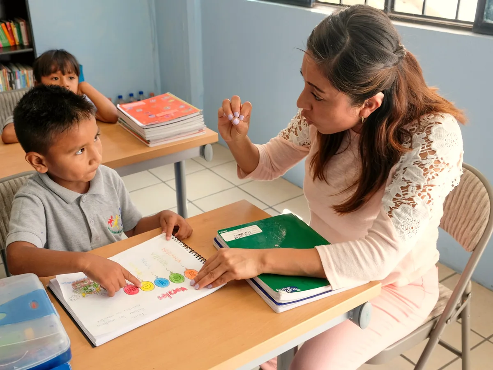

Primero medir. Después dar clase.
Un alumno que no entiende la teoría y otro que se bloquea en el examen no necesitan lo mismo, aunque los dos hayan suspendido con un 4.
Las cuatro fases
Qué pasa exactamente la primera semana.
Es la parte que casi ninguna academia cuenta, y la que decide si el curso va a funcionar.

Día 1
Valoración con la familia y con el alumno
Primero a solas con el alumno, después con la familia. No siempre cuentan lo mismo, y las dos versiones hacen falta.
Día 1
Prueba escrita corta
Veinte minutos con contenidos del curso actual y de los dos anteriores. Sirve para localizar dónde empieza realmente el problema.
Días 2–3
Se escribe el plan
Qué contenidos se recuperan, en qué orden, cuántas sesiones y con qué profesor. Con una fecha de revisión ya puesta.
Día 4
Se enseña el plan antes de cobrar
La familia lo lee y decide. Si el plan no convence o parece excesivo, se cambia o no se empieza. Hasta aquí no se ha pagado nada.
Día 5
Primera sesión con objetivo
No se empieza con «trae los deberes». Se empieza por el primer contenido del plan, que casi nunca es el tema que se está dando en clase.
Cuatro cosas que no vas a encontrar aquí.
Decirlo por adelantado ahorra tiempo a todos.
Aulas de veinte alumnos haciendo deberes.
Seis como máximo, y cuatro en Bachillerato. Por encima de eso, el profesor deja de corregir y pasa a vigilar.
Matrícula, permanencia ni paquetes cerrados.
Se paga el mes en curso. Para dejarlo basta con avisar quince días antes.
Promesas de aprobado.
Nadie serio puede garantizar una nota. Lo que sí garantizamos es que sabrás cada mes en qué punto está el alumno.
Mantener sesiones que ya no hacen falta.
En la revisión mensual, si el alumno ya trabaja solo, proponemos bajar de tres días a dos. Lo hacemos unas veinte veces cada curso.
El informe de las cuatro semanas.
No es un boletín de notas. Recoge tres cosas: qué se ha trabajado, qué ha mejorado de forma medible y qué sigue pendiente. Va con una recomendación concreta para el mes siguiente.
Si la recomendación es reducir sesiones, se dice igual. Es la parte del informe que más nos preguntan las familias nuevas.
¿Te suena tu caso?
El diagnóstico de la web aplica esta misma lógica en un minuto: distingue si el problema es de base, de método, de examen o de urgencia.